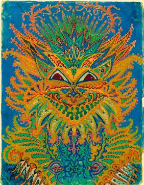
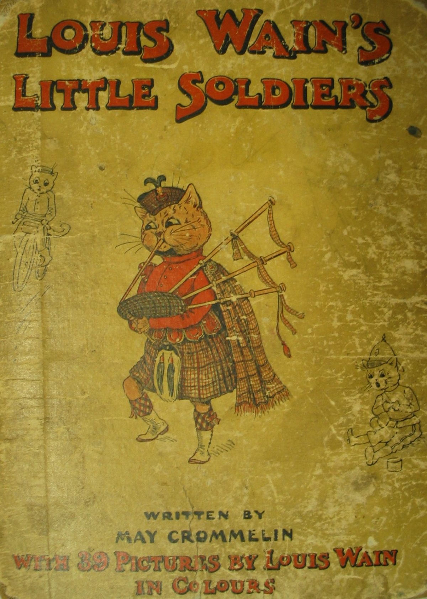

Color, simetría y percepción
En la obra de Louis Wain, el arte y la mente se entrelazan en un diálogo constante. Sus gatos no son solo animales; son espejos de estados de ánimo, emociones y percepciones. En sus momentos de lucidez, los felinos sonríen, se visten y toman té. En los de crisis, se transforman en figuras vibrantes de color y movimiento.
Su arte parece un intento de **ordenar el caos interior**. Cada trazo y patrón repetitivo podría interpretarse como una forma de control, una búsqueda de armonía frente al desbordamiento mental. Wain convertía su ansiedad y su fascinación por el mundo en un universo visual único.
El arte como refugio mental
Los colores intensos, los patrones hipnóticos y la simetría casi matemática que aparecen en sus últimos trabajos han sido interpretados como signos de una mente profundamente perceptiva. Más que desintegrarse, su percepción se transformaba: veía conexiones invisibles entre las formas, los tonos y las emociones.
Louis Wain no perdió el sentido del mundo: lo reinventó a su manera, convirtiendo la experiencia de su mente en una celebración visual sin precedentes.
La mirada interior del artista
Para Wain, dibujar gatos era más que una profesión: era una necesidad emocional. Su arte lo mantenía conectado con el mundo, incluso durante su internación. Mientras su entorno se reducía a las paredes del hospital, sus obras seguían expandiéndose en complejidad, luz y color.
Los psiquiatras actuales reconocen que **crear arte puede ser terapéutico**. En el caso de Wain, sus obras funcionan como un diario emocional: muestran la oscilación entre la calma y la euforia, entre el orden y la fragmentación. En ese sentido, su pintura fue una forma temprana de lo que hoy conocemos como **arteterapia**.
